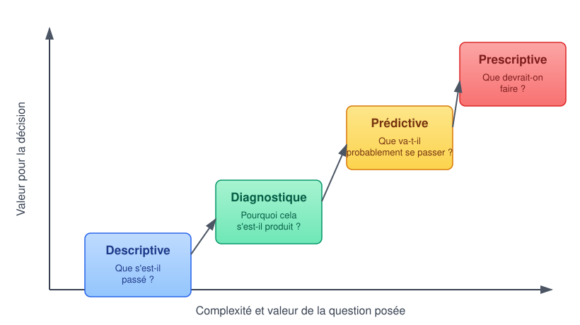
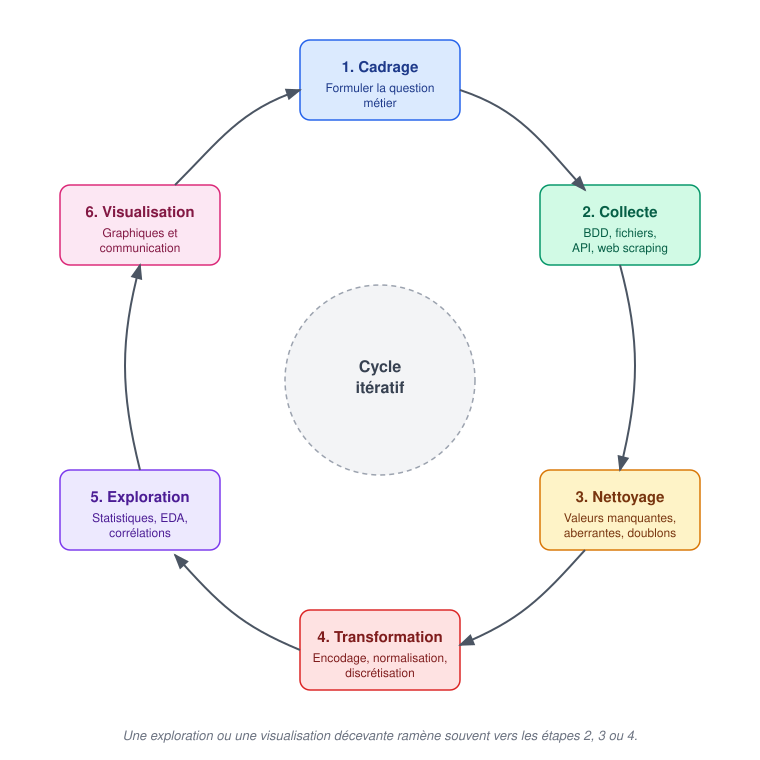

Code
resume = df["montant"].describe()
print(resume[["count", "mean", "50%", "min", "max", "25%", "75%"]])À la fin de ce chapitre introductif, l’étudiant sera capable de :
L’analyse de données (Data Analysis) désigne l’ensemble des démarches permettant d’inspecter, de nettoyer, de transformer et de modéliser statistiquement des données, dans le but d’en extraire des informations utiles, de soutenir une décision ou de valider une hypothèse.
Définition 1 L’analyse de données consiste à transformer des données brutes, souvent volumineuses et désorganisées, en informations exploitables, à travers une succession d’étapes de collecte, de nettoyage, d’exploration et de représentation.
Contrairement à ce que l’on pense parfois, l’essentiel du travail d’un analyste ne consiste pas à produire des graphiques, mais à comprendre les données : d’où elles viennent, ce qu’elles représentent réellement, quelles sont leurs limites et leurs biais. La visualisation n’intervient qu’en bout de chaîne, pour communiquer un résultat déjà établi.
Il existe quatre domaines liés à l’analyse de données : Data Analysis, Data Science, Business Intelligence, et Machine Learning. Ces quatre termes sont souvent confondus. Ils partagent une matière première commune (la donnée) mais diffèrent par leurs objectifs et leurs méthodes.
| Domaine | Question typique | Résultat produit |
|---|---|---|
| Business Intelligence (BI) | « Que s’est-il passé, et où en sommes-nous ? » | Tableaux de bord, indicateurs (KPI) suivis dans le temps |
| Analyse de données (Data Analysis) | « Pourquoi cela s’est-il produit ? Que peut-on en conclure ? » | Rapports, visualisations, recommandations argumentées |
| Data Science | « Que va-t-il probablement se passer ? » | Modèles statistiques et modèles de Machine Learning |
| Machine Learning | « Comment automatiser une prédiction ou une décision à grande échelle ? » | Un modèle entraîné, déployé en production |
Ce module se concentre sur les deux premières colonnes de la Table 1 : la préparation, l’exploration et la visualisation des données. Les algorithmes de Machine Learning (régression, classification, clustering…) ne sont pas traités ici : ils font l’objet du cours Machine Learning. Une bonne partie du travail présenté dans ce cours reste néanmoins un prérequis indispensable à tout projet de Machine Learning.
En pratique, ces frontières sont poreuses : un même professionnel peut, selon les entreprises, être appelé Data Analyst et exercer des missions de Data Scientist, ou inversement. Ce qui compte est de comprendre la nature de la question posée plutôt que le titre du poste.
On distingue classiquement quatre niveaux d’analyse, de la simple observation du passé jusqu’à la recommandation d’action, chacun s’appuyant sur le précédent.

| Type d’analyse | Question posée | Exemple |
|---|---|---|
| Descriptive | Que s’est-il passé ? | Le chiffre d’affaires du mois dernier par région |
| Diagnostique | Pourquoi cela s’est-il passé ? | Pourquoi les ventes ont-elles chuté en mars dans le nord ? |
| Prédictive | Que va-t-il probablement se passer ? | Quel sera le chiffre d’affaires du mois prochain ? |
| Prescriptive | Que devrait-on faire ? | Quelle action marketing maximiserait les ventes du trimestre ? |
Ce cours se concentre principalement sur les analyses descriptive et diagnostique : elles reposent entièrement sur les techniques de préparation, d’exploration et de visualisation présentées dans les chapitres suivants, et ne nécessitent pas d’algorithme d’apprentissage automatique.
Avant de construire un graphique ou un tableau de bord, il faut savoir décrire simplement les données.
Une observation est une ligne du tableau (par exemple une commande) et une variable est une colonne (par exemple le montant de la commande).
Une variable peut être de trois natures :
Ces distinctions sont fondamentales : les indicateurs et les graphiques adaptés ne sont pas les mêmes selon le type de variable.
L’effectif d’une catégorie est le nombre d’observations qui appartiennent à cette catégorie.
La fréquence (ou proportion) est la part que représente cet effectif dans l’ensemble des observations.
\[ \text{fréquence} = \frac{\text{effectif de la catégorie}}{\text{effectif total}} \]
On l’exprime souvent en pourcentage en multipliant par 100.
Sur 120 commandes, 30 proviennent de Casablanca :
\[ \text{fréquence} = \frac{30}{120} = 0{,}25 = 25\,\%. \]
Interprétation : une commande sur quatre est passée à Casablanca.
Pour comparer une même grandeur entre deux périodes (ou deux situations), on calcule la variation relative :
\[ \text{variation en \%} = \frac{\text{valeur finale} - \text{valeur initiale}} {\text{valeur initiale}} \times 100. \]
Le chiffre d’affaires d’un produit passe de 200 MAD à 240 MAD :
\[ \frac{240 - 200}{200} \times 100 = 20\,\%. \]
Interprétation : les ventes ont augmenté de 20 %.
Lorsqu’on dispose d’une variable quantitative, on a besoin d’indicateurs qui résument sa tendance centrale (où se situent les valeurs) et sa dispersion (à quel point elles sont dispersées).
| Indicateur | Définition / formule | Question à laquelle il répond |
|---|---|---|
| Moyenne (\(\bar{x}\)) | \(\displaystyle \bar{x} = \frac{1}{n}\sum_{i=1}^{n} x_i\) | Quel serait le partage équitable du total ? |
| Médiane (\(Me\)) | Valeur qui partage la série ordonnée en deux groupes de même effectif | Quelle valeur est au milieu des observations ? |
| Minimum / Maximum | Plus petite et plus grande valeur observée | Quelles sont les extrêmes ? |
| Premier quartile (\(Q_1\)) | Médiane de la moitié inférieure de la série | Où se situent les 25 % les plus faibles ? |
| Troisième quartile (\(Q_3\)) | Médiane de la moitié supérieure de la série | Où se situent les 75 % les plus faibles ? |
| Écart interquartile (IQR) | \(IQR = Q_3 - Q_1\) | Quelle est la largeur de la moitié centrale des données ? |
| Écart-type (\(s\)) | \(\displaystyle s = \sqrt{\frac{1}{n}\sum_{i=1}^{n}(x_i - \bar{x})^2}\) | Les valeurs sont-elles proches de la moyenne ? |
1. Médiane On note
\[x_1, x_2, \ldots, x_n\]
les observations d’une variable quantitative et on note
\[x_{(1)} \leq x_{(2)} \leq \ldots \leq x_{(n)}\]
la série ordonnée.
Si \(n\) est impair :
\[
Me = x_{\left(\frac{n+1}{2}\right)}
\]
Si \(n\) est pair :
\[
Me = \frac{x_{\left(\frac{n}{2}\right)} + x_{\left(\frac{n}{2}+1\right)}}{2}
\]
2. Quartiles \(Q_1\) et \(Q_3\) (méthode de Tukey)
Montants de 9 commandes (en MAD) :
420, 95, 250, 110, 130, 160, 190, 80, 45
1. Série ordonnée
\[
x_{(1)}=45,\ x_{(2)}=80,\ x_{(3)}=95,\ x_{(4)}=110,\ x_{(5)}=130,\
x_{(6)}=160,\ x_{(7)}=190,\ x_{(8)}=250,\ x_{(9)}=420
\]
2. Effectif : \(n = 9\)
3. Minimum et maximum
- \(\min = 45\) MAD
- \(\max = 420\) MAD
4. Moyenne
\[
\bar{x} = \frac{45+80+95+110+130+160+190+250+420}{9} = \frac{1480}{9} \approx 164{,}44\,\text{MAD}
\]
5. Médiane (\(n\) impair)
\[
Me = x_{\left(\frac{9+1}{2}\right)} = x_{(5)} = 130\,\text{MAD}
\]
6. Quartiles
Moitié inférieure (valeurs < 130) : \(45,\ 80,\ 95,\ 110\)
→ \(Q_1\) = médiane de ces 4 valeurs = \(\dfrac{80 + 95}{2} = 87{,}5\) MAD
Moitié supérieure (valeurs > 130) : \(160,\ 190,\ 250,\ 420\)
→ \(Q_3\) = médiane de ces 4 valeurs = \(\dfrac{190 + 250}{2} = 220\) MAD
7. Écart interquartile
\[
IQR = Q_3 - Q_1 = 220 - 87{,}5 = 132{,}5\,\text{MAD}
\]
Interprétation
- La moyenne (≈ 164 MAD) est tirée vers le haut par la commande de 420 MAD.
- La médiane (130 MAD) est plus représentative du « client typique ».
- 50 % des commandes se situent entre 87,5 et 220 MAD (IQR = 132,5 MAD).
Montants de 10 commandes (en MAD) :
30, 55, 90, 70, 150, 125, 105, 180, 220, 380
1. Série ordonnée
\[
x_{(1)}=30,\ x_{(2)}=55,\ x_{(3)}=70,\ x_{(4)}=90,\ x_{(5)}=105,\
x_{(6)}=125,\ x_{(7)}=150,\ x_{(8)}=180,\ x_{(9)}=220,\ x_{(10)}=380
\]
2. Effectif : \(n = 10\)
3. Minimum et maximum
- \(\min = 30\) MAD
- \(\max = 380\) MAD
4. Moyenne
\[
\bar{x} = \frac{30+55+70+90+105+125+150+180+220+380}{10} = 140{,}5\,\text{MAD}
\]
5. Médiane (\(n\) pair)
\[
Me = \frac{x_{(5)} + x_{(6)}}{2} = \frac{105 + 125}{2} = 115\,\text{MAD}
\]
6. Quartiles
Moitié inférieure (valeurs < 115) : \(30,\ 55,\ 70,\ 90,\ 105\)
→ \(Q_1\) = médiane de ces 5 valeurs = \(70\) MAD
Moitié supérieure (valeurs > 115) : \(125,\ 150,\ 180,\ 220,\ 380\)
→ \(Q_3\) = médiane de ces 5 valeurs = \(180\) MAD
7. Écart interquartile
\[
IQR = Q_3 - Q_1 = 180 - 70 = 110\,\text{MAD}
\]
Interprétation
- La moyenne (140,5 MAD) est influencée par la commande de 380 MAD.
- La médiane (115 MAD) reflète mieux le centre de la distribution.
- La moitié centrale des commandes se situe entre 70 et 180 MAD (IQR = 110 MAD).
resume = df["montant"].describe()
print(resume[["count", "mean", "50%", "min", "max", "25%", "75%"]])La méthode describe() fournit :
count : effectifmean : moyenne50% : médianemin / max : extrêmes25% / 75% : quartiles \(Q_1\) et \(Q_3\)Elle ne remplace pas l’interprétation : un indicateur doit toujours être accompagné de son unité, de sa période et de la population étudiée.
Une moyenne de 250 MAD ne dit pas si les commandes sont toutes proches de 250 MAD ou si quelques très grosses commandes compensent beaucoup de petites commandes.
Pour comprendre la forme de la distribution, on complète toujours la moyenne par la médiane, les quartiles (ou l’IQR) et, idéalement, un graphique (histogramme, boîte à moustaches…).
Un projet d’analyse de données suit une succession d’étapes, rarement linéaire, que l’on peut résumer ainsi :

Ce découpage est proche du cadre OSEMN (Obtain, Scrub, Explore, Model, iNterpret), popularisé par la communauté Data Science. Nous l’adaptons ici en retirant l’étape de modélisation prédictive (« Model »), hors périmètre de ce cours, et en insistant davantage sur la communication des résultats.
Comme pour tout cycle de projet, ces étapes sont itératives : une exploration révélant un problème de qualité de données ramène généralement à l’étape de nettoyage, et une visualisation peu convaincante amène souvent à revisiter l’exploration.
Comme pour le Machine Learning, Python s’impose comme langage principal pour l’analyse de données, grâce à la richesse de son écosystème scientifique et à la lisibilité de sa syntaxe.
| Bibliothèque | Rôle |
|---|---|
pandas |
Manipulation de tableaux de données (DataFrame) : lecture, nettoyage, agrégation |
numpy |
Calcul numérique et vectoriel sous-jacent à pandas |
matplotlib |
Bibliothèque de visualisation de référence, hautement personnalisable |
seaborn |
Visualisation statistique construite sur matplotlib, orientée exploration rapide |
Comme dans le reste de la formation, nous privilégions les notebooks Jupyter (JupyterLab, Google Colab) pour l’exploration interactive et la visualisation immédiate cellule par cellule, et Visual Studio Code si l’etudiant voulais utiliser des fichier python ou ouvrir jupyter noebook dans cet environnement.
uvUn projet de Machine Learning ne dépend pas uniquement du code que nous écrivons. Il repose également sur un environnement logiciel : une version de Python, un ensemble de bibliothèques, des versions compatibles de ces bibliothèques et différents outils nécessaires à l’exécution du projet.
La gestion de cet environnement est importante dès qu’un projet doit être reproduit, partagé, maintenu ou déployé. Deux utilisateurs disposant du même code peuvent, par exemple, rencontrer des problèmes différents si leurs versions de Python ou de certaines dépendances ne sont pas les mêmes. La gestion des dépendances constitue ainsi une composante essentielle de la reproductibilité et de la maintenance d’un projet.
Dans ce cours, nous présenterons d’abord l’approche classique de l’écosystème Python, puis nous adopterons uv comme outil de gestion de nos projets.
venv et pipL’écosystème Python fournit déjà les outils nécessaires pour créer un environnement isolé et installer les bibliothèques d’un projet. Le module venv est l’outil standard de Python pour créer des environnements virtuels. Ceux-ci permettent d’isoler les dépendances d’un projet de celles installées dans les autres projets ou dans l’installation générale de Python.
L’installation des bibliothèques s’effectue généralement avec pip, l’installateur de paquets Python. Les bibliothèques sont notamment disponibles sur PyPI, le Python Package Index.
Une configuration classique peut donc être représentée de manière simplifiée par :
python -m venv .venvpuis, dans l’environnement virtuel :
python -m pip install numpy pandas scikit-learnLes dépendances peuvent ensuite être consignées dans un fichier requirements.txt, par exemple :
numpy
pandas
scikit-learnCette approche est parfaitement valable et reste largement utilisée. Le Python Packaging User Guide présente d’ailleurs cette organisation ainsi que les pratiques modernes de gestion et de distribution des projets Python.
Elle présente cependant une certaine fragmentation : la création de l’environnement, la gestion des dépendances et leur installation sont assurées par des mécanismes distincts. Pour des projets plus structurés, il devient également utile de disposer d’une déclaration centralisée des dépendances et d’un mécanisme de verrouillage permettant de conserver une résolution précise de l’environnement.
pyproject.tomlLes projets Python modernes utilisent notamment le fichier pyproject.toml. Ce fichier permet de centraliser différentes informations relatives au projet, notamment ses métadonnées et ses dépendances.
Il constitue aujourd’hui un élément central de l’écosystème de packaging Python et est utilisé par de nombreux outils modernes.
Dans ce cours, nous allons nous appuyer sur uv, développé par Astral, pour gérer nos projets Python.
uv ?uv est un gestionnaire de projets et de paquets Python qui regroupe dans un même outil plusieurs opérations auparavant réalisées avec différents outils. Il permet notamment de gérer les projets Python, les environnements virtuels, les versions de Python, les dépendances et leur résolution, ainsi que l’exécution des commandes dans l’environnement du projet.
La documentation officielle de uv présente notamment les fonctions suivantes :
uv init ;L’intérêt de uv dans notre cours est donc moins de remplacer une commande particulière que de fournir une organisation cohérente de l’ensemble du projet Python.
pyproject.toml, uv.lock et .venvAvec uv, trois éléments sont particulièrement importants.
Le fichier pyproject.toml décrit le projet et ses besoins, notamment les dépendances et la version de Python requise.
Le fichier uv.lock enregistre la résolution précise des dépendances du projet. Contrairement au fichier pyproject.toml, qui exprime les besoins du projet de manière générale, le fichier de verrouillage conserve les versions effectivement résolues. Il peut ainsi être versionné avec le projet afin de faciliter la reconstruction d’un environnement cohérent sur différentes machines. La documentation officielle de uv décrit précisément le rôle de uv.lock.
Enfin, uv utilise un environnement virtuel associé au projet, généralement situé dans .venv.
On peut donc représenter schématiquement l’organisation d’un projet ainsi :
projet/
├── .venv/
├── pyproject.toml
├── uv.lock
└── ...Le principe peut être résumé ainsi :
pyproject.tomldécrit les besoins du projet ;uv.lockconserve leur résolution précise ;.venvcontient l’environnement dans lequel le projet est exécuté.
La synchronisation entre ces éléments est prise en charge par uv. La documentation officielle explique notamment que les opérations telles que uv sync et uv run peuvent mettre à jour l’environnement à partir du fichier de verrouillage.
uv plutôt qu’Anaconda ou Conda ?Il existe d’autres solutions parfaitement valables pour gérer les environnements Python. L’une des plus connues est l’écosystème Conda, qui permet notamment de créer, gérer, partager et supprimer des environnements contenant différentes versions de Python et de paquets.
Notre choix de uv dans ce cours ne signifie donc pas que Conda ou Anaconda sont inadaptés. Il s’agit d’un choix pédagogique et technique correspondant à l’organisation que nous souhaitons adopter.
Nous retenons uv principalement pour les raisons suivantes :
Une approche directement centrée sur les projets Python. uv s’intègre naturellement aux mécanismes modernes du packaging Python, notamment pyproject.toml et l’écosystème PyPI.
Une gestion unifiée du projet. Un même outil permet de gérer l’environnement, les dépendances, leur résolution, le verrouillage et l’exécution du projet.
Une structure explicite et versionnable. L’association de pyproject.toml et uv.lock fournit une description claire du projet et de son environnement de dépendances.
Une bonne adéquation avec les projets du cours. Les projets étudiés utiliseront principalement des bibliothèques de l’écosystème Python, telles que numpy, pandas, matplotlib et scikit-learn, ainsi que les outils Jupyter. uv fournit une organisation cohérente pour leur gestion dans un projet Python local.
Une continuité entre expérimentation et développement. Les étudiants pourront commencer par explorer les données et les modèles dans des notebooks, puis retrouver le même environnement de projet lorsqu’ils passeront à une organisation plus structurée du code Python.
Le choix de uv répond donc avant tout aux besoins de ce cours : disposer d’un environnement Python isolé, explicite, reproductible et facile à partager, tout en introduisant progressivement les pratiques modernes de gestion de projet.
L’écosystème de l’analyse de données évolue rapidement. Sans remplacer les outils historiques présentés ci-dessus, plusieurs bibliothèques récentes gagnent en popularité et méritent d’être connues :
Polars : une alternative à pandas, écrite en Rust, offrant des performances nettement supérieures sur de gros volumes de données grâce à l’exécution parallèle et à l’évaluation paresseuse (lazy evaluation).DuckDB : un moteur de base de données analytique embarqué, permettant d’exécuter des requêtes SQL directement sur des fichiers CSV ou Parquet, sans serveur, avec des performances proches d’un entrepôt de données.ydata-profiling, Sweetviz) : génèrent en une commande un rapport exploratoire complet d’un jeu de données (statistiques, distributions, corrélations, valeurs manquantes).1DataFrame en langage naturel commencent à s’intégrer aux environnements de data analysis, sans se substituer à une compréhension rigoureuse des données par l’analyste (l’humain!!).Ces outils ne sont pas obligatoires dans ce cours, mais seront mentionnés ponctuellement à titre de complément, car ils représentent une évolution significative des pratiques professionnelles actuelles.
| Métier | Mission principale | Compétences clés |
|---|---|---|
| Data Analyst | Explorer, visualiser et interpréter les données pour éclairer une décision | SQL, pandas, visualisation, statistiques descriptives |
| BI Analyst / BI Developer | Construire et maintenir des tableaux de bord et indicateurs récurrents | SQL, outils de BI (Power BI, Tableau), modélisation de données |
| Data Scientist | Concevoir des modèles statistiques et prédictifs | Statistique inférentielle, Machine Learning, programmation |
| Data Engineer | Construire et fiabiliser les pipelines d’acquisition et de stockage des données | Bases de données, orchestration, ingénierie logicielle |
Ce cours prépare avant tout au cœur du métier de Data Analyst, tout en posant des bases indispensables aux trois autres profils.
Exercice 1 (Vrai ou Faux)
Exercice 2 (Classer les questions) Pour chacune des questions suivantes, indiquez le type d’analyse correspondant (descriptive, diagnostique, prédictive ou prescriptive) :
Exercice 3 (Étude de cas courte) Une association marocaine de protection de l’environnement souhaite comprendre l’évolution du volume de déchets collectés dans trois villes sur les deux dernières années, puis identifier les facteurs expliquant les écarts entre villes.
Exercice 4 (Moyenne, médiane et fréquence) Les montants de cinq commandes sont : 80, 100, 100, 120 et 600 MAD.
Exercice 5 (Lire une variation) Le nombre de visiteurs d’un site passe de 2 000 en avril à 2 400 en mai, puis à 2 280 en juin.
Exercice 6 (Identifier les indicateurs utiles) Pour chacune des questions, choisissez l’indicateur le plus directement utile : effectif, fréquence, moyenne, médiane, minimum/maximum ou IQR.
Exercice 7 (Reconnaître le type de variable) Classez les variables suivantes en qualitative, quantitative ou temporelle : quartier, nombre_de_produits, date_commande, satisfaction codée « faible / moyenne / élevée ».
Exercice 8 (Choisir une analyse) Une responsable constate que les ventes sont plus faibles en août. Elle veut d’abord mesurer la baisse, puis comprendre si elle concerne seulement une région.
voir le chapitre sur l’exploration des données.↩︎